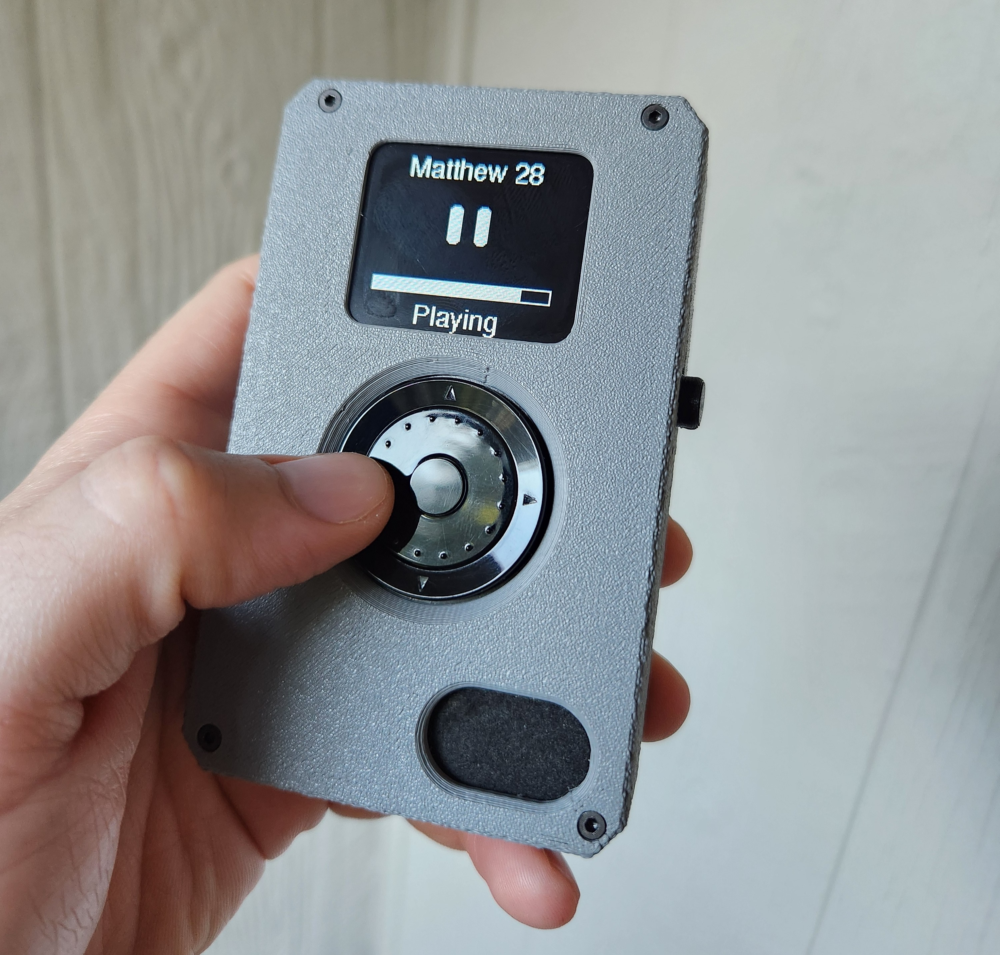

Over the past phase of this project, we have moved from initial vision into a well-defined and technically grounded concept. The core idea—an intuitive, distraction-free audio Bible designed for real usability—has been carefully thought through, challenged, and refined. Key architectural decisions have been made, including a modular hardware design focused on long-term repairability and adaptability, as well as a user interface approach that allows fast, natural navigation through the structure of the Bible. At this point, the ideation phase is complete, and we have successfully entered the proof-of-concept stage. We now have a fully functional working system that demonstrates the core experience of the device. Using a rotary-based interface inspired by familiar and intuitive controls, users can scroll through all 66 books of the Bible, select chapters, and instantly begin audio playback. The system supports full Bible navigation, responsive input handling, and a clear on-screen interface that is already proving to be simple and effective. We have also validated key technical concepts, including audio playback architecture, menu systems, and the ability to structure content in a scalable way for future multilingual deployment. This progress confirms that the vision is not only possible, but practical. Looking ahead, the next phase of the project is the development of the first integrated hardware prototype. This will move us beyond a breadboard setup into a cohesive, purpose-built device that brings together the display, controls, audio system, and power architecture into a unified form factor. During this phase, we will also begin refining the physical design, improving durability, and exploring features such as modular component replacement and future solar-powered operation. For supporters and potential volunteers, this is an exciting moment to get involved. The foundation has been laid, and the project is transitioning into hands-on development where engineering, design, and practical problem-solving come together. Whether your background is in electronics, mechanical design, software, or simply a desire to contribute, there is meaningful work ahead as we move toward building a reliable, accessible tool that helps people engage with Scripture in a powerful and practical way.
